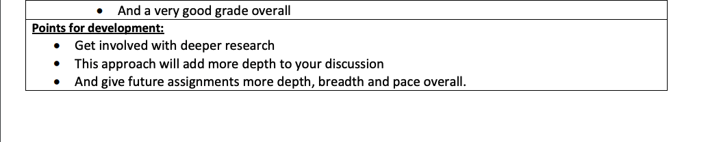
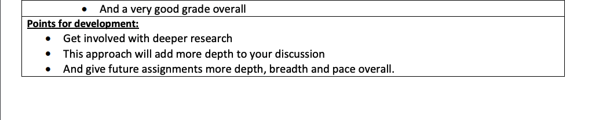
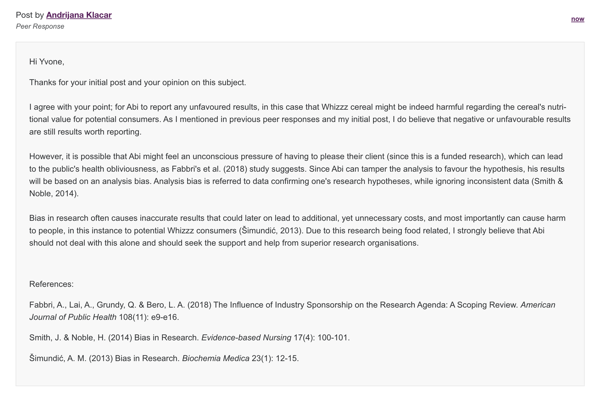
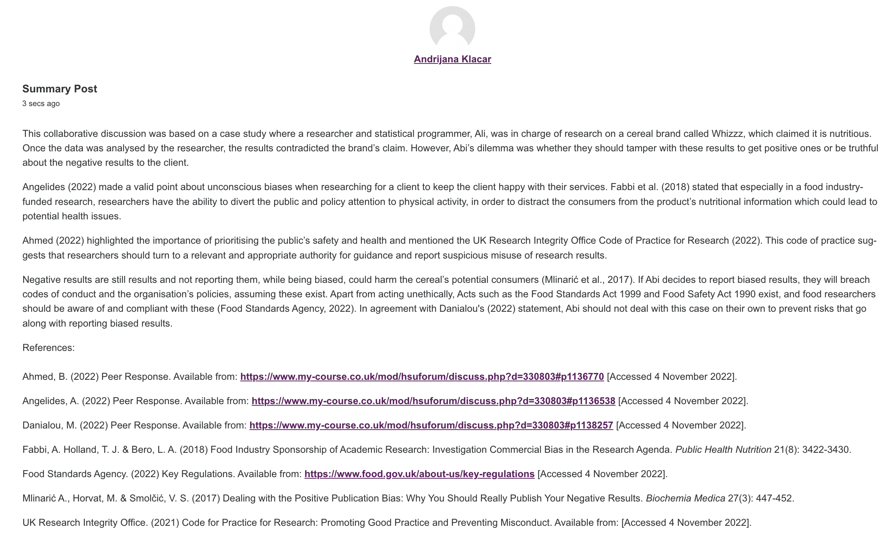
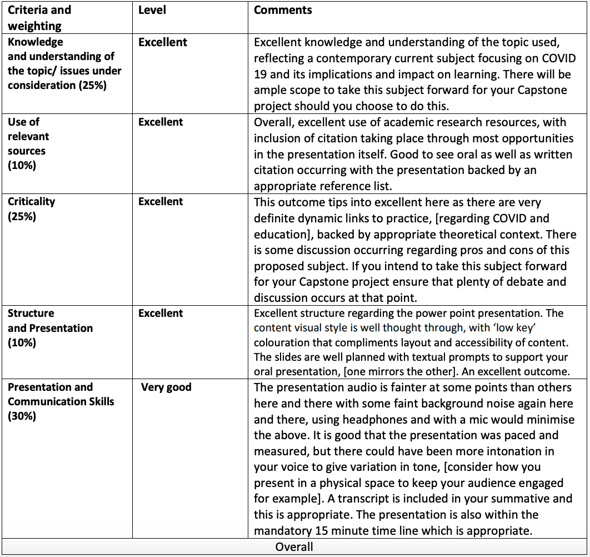
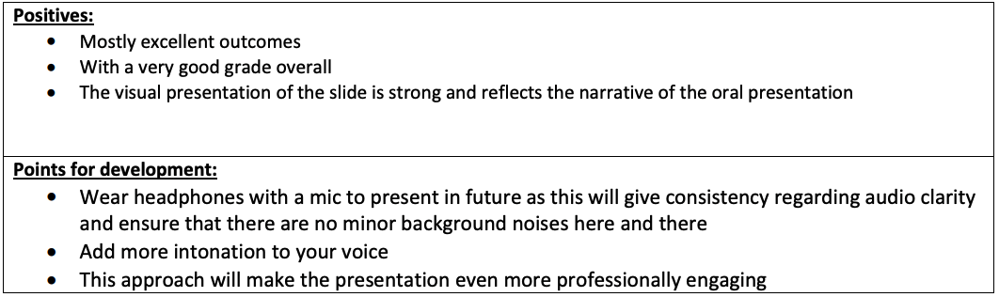
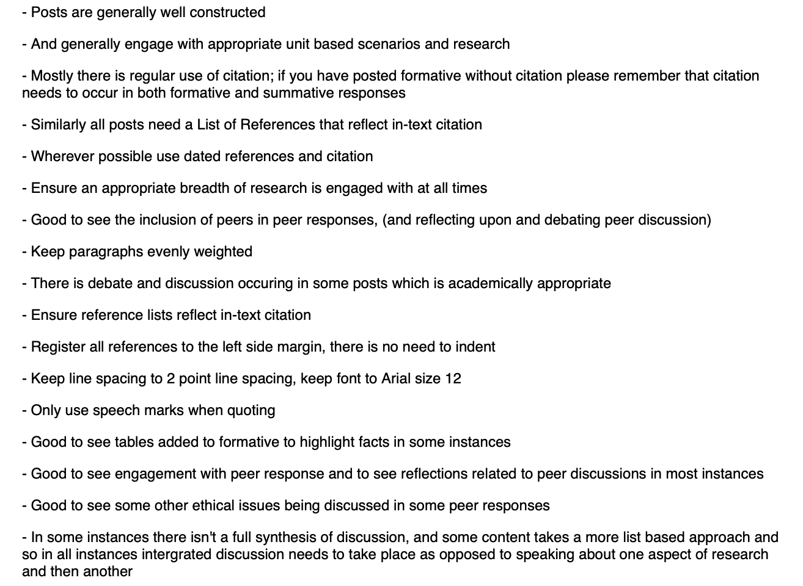

Research Methods and Professional Practice

This module provides foundation on research methods and introduces research techniques, which will then be applied on upcoming projects. It will also provide insight on professional, legal, ethical, and cultural issues affecting computing professionals and projects nowadays.
Unit 1:
Collaborative Learning Discussion 1: Codes of Ethics and Professional Conduct

Reflective Activity 1
Introduction This reflective activity will be based on the assumption that the computing professional in question is an employee of a private clinic and is responsible for setting up an online appointment booking and scheduling with an additional feature of online payments using the clinic’s system. This clinic is assumed to be based in the United Kingdom (UK) and personal information such as: full names, email addresses, phone numbers, patients’ addresses, ID numbers, and credit card details will be stored in the clinic’s databases. Ethical Issues Identified Stahl’s et al. (2016) paper has touched upon several ethical issues regarding the information technology sector. The following four issues have been chosen to be the most relevant, accurate, and urgent issues based on the assumed organisation mentioned earlier:
Reasoning Quiz
This quiz was based on inductive and deductive logic. We were asked to choose whether each statement was deductive or inductive. I attempted this quiz twice. The first attempt I got 4/6 questions correct. I was a bit confused as to why the other two were wrong since I do not think that all cats have a keen smell, some might not be able to smell at all. Also, I did not think that all football players weighted more than 170 pounds. I assumed that since the statements had the keyword all, I should have assumed that those statements were true.
Reflections
This unit focused on the ethical aspect of cybersecurity and responsible research. I believe ethics, escpecially in work environments, should be in any organisation's priority list. Toxic work environments are considered to negatively affect one's productivity, while this decrease in productivity could lead to job burnouts (Anjum et. al., 2018). As someone who has heard stories of friends and family and toxic environments, I try keeping in mind that my mental health and happiness are more important than salaries and money. The collaborative discussion was a great reminder of this morale. Conducting research is never easy, at least for me. I believe there are a lot of loopholes to watch out for, such as irrelevant, outdated, untrusted and non-reliable sources. Although university's guidelines are straight-forward when it comes to referencing, I found that Nulli's et. al. (2018) article included a very clear, informative, and helpful table, which I will address to when researching. References: Anjum, A., Ming, X., Siddiqi, A. F. & Rasool, S. F. (2018) An Empirical Study Analyzing Job Productivity in Toxic Workplace Environments. International Journal of Environmental Research and Public Health 15(5): 1-15. Nulli, M., Stahl, B., Ten Holter, C. & de Heaver, M. (2018) Responsible research in IT. ITNOW 60(2): 14-15.
Unit 2:
Collaborative Learning Discussion 1: Peer Responses
My response to Angelides' (2022) Initial Post:My response to Lin's (2022) Initial Post: References: Angelides, A. (2022) Initial Post. Available from: https://www.my-course.co.uk/mod/hsuforum/discuss.php?d=325555 [Accessed 27 September 2022]. Lin, H. W. (2022) Initial Post. Available from: https://www.my-course.co.uk/mod/hsuforum/discuss.php?d=325959 [Accessed 27 September 2022].
Literature Review and Research Proposal Outline
Reflections
I enjoy researching and reading about topics I find intriguing, but this unit was a bit confusing and a bit stressful. Although we had the freedom to choose a literature review topic, I did not know how to write a literature review or where to even start. However, the lecturecast, literature review guide questions provided by Healy et. al. (2020), and some further research I have done gave me an insight on how it should look like. References: Healey, M., Matthews, K. & Cook-Sather, A. (2020) Writing about learning and teaching in higher education: Creating and contributing to scholarly conversations across a range of genres. Center for Engaged Learning Open-Access Books, Elon University.
Unit 3:
Collaborative Learning Discussion 1: Summary Post
Below is a screenshot of my summary post:
e-Portfolio Activity: Research Proposal Review
Reflections
This unit focused on the research methods. Although I did not choose or thought about my capstone project topic, the information on research methods (BRM, n.d.) made me think about the approach I would personally like to follow, upon deciding on my project topic. Since I have not made up my mind yet on a topic, I chose to proceed with the chosen topic for literature review in unit 1 for the upcoming assessments. References: British Research Methods (BRM). (n.d.) Research Design.
Unit 4:
Literature Review Outline and Tutor Feedback
Reflections
This unit focused on research methods such as case studies, focus groups, and quantitative and qualitative observations. Although I am unsure about my research proposal for my dissertation, I would like my topic to have the ability to use questionnaires and quantitatively analyse my data. This week we had to submit our literature review outlines, for which I found structuring my points and sections of this lit review very intimidating, even though I have completed written essays for this program and reports for my BSc modules.
Unit 5:
Reflective Activity 2
Reflections
Questionnaires and surveys are one of the few methods I think I will need for my upcoming capstone project. Although, I have yet to decide on what I would like to focus on, I believe the second reflective activity and reading material helped me understand how to ethically create a questionnaire appropriate enough for a dissertation. It helped me realise that it is important to not be biased, as the results of a biased survey could have a negative impact when analysing these results. If I do use surveys for my capstone project, I would want to design it in a way that it shows rectitude. For this week we also got our feedback on the collaborative discussion. The major key points were: Based on my CLQ, I believe I have a couple of things to keep in mind, such as keeping my paragraphs of roughly the same size. That is something I will have to apply for the upcoming CLQ.
Unit 6:
Wiki Activity: Questionnaires
Reflections
The wiki activity helped me 'visualise' unethical surveys, or even surveys that have plenty of room for improvement. This activity not only highlighted the importance of a well designed and ethical survey, but it also gave us the chance to somehow put our knowledge in practice. Due to the data protection act and GDPR in general, I have to ensure that when conducting and designing a survey, I must include a disclaimer on how the participants' data will be used, for how long the data will be held, etcetera.
Unit 7:
Collaborative Learning Discussion Discussion: Accuracy of information

Literature Review Feedback
 

Reflections
For this unit we had to submit our Literature Review. This was our very first summative assessment, hence this unit was a bit more demanding, as there were a lot of final editing, reviewing, and even some additional researching for the literature review. The collaborative learning discussion was based on a case study on accuracy of information. In our initial posts we had to include the ethical aspect of reporting both negative and positive results, as well as the legal aspect of it. I believe this is good practice for our capstone project as we will have to analyse data as well. It was a good reminder that negative results, although sometimes unwanted or unexpected, are still results worth publishing in order to follow ethical codes of conducts.
Unit 8:
Collaborative Learning Discussion 2: Peer Responses
My response to Angelides' (2022) Initial Post: My response to Meadows' (2022) Initial Post: My response to Chan's (2022) Initial Post:  References: Angelides, A. (2022) Initial Post. Available from: https://www.my-course.co.uk/mod/hsuforum/discuss.php?d=328084 [Accessed 29 October 2022]. Chan, K. Y. Y. (2022) Initial Post. Available from: https://www.my-course.co.uk/mod/hsuforum/discuss.php?d=331533#p1140911 [Accessed 19 November 2022]. Meadows, R. (2022) Initial Post. Available from: https://www.my-course.co.uk/mod/hsuforum/discuss.php?d=329124 [Accessed 29 October 2022].
Research Proposal Outline
Reflections
This week's work was focused on statistics, something I had covered in my undergraduate studies. For our final research projects we would have to know how to find means, medians, standard deviation, and other statistical definitions highlighted in Berenson's et al. (2015) book. However, I find statistics a bit confusing, hence I would have to study the subject a bit more, before proceeding with my project. Outlines are a great way of organising my thoughts, objectives, and aims of a project, and they also give me the chance to not stress for deadlines. For the research proposal outline, I have included the vital ethical considerations I would want to apply to the project, as ethics has been a continuous concept of this master program and I aim to conduct an ethical report. References: Berenson, L., Levine, D. & Szabat, K. (2015) Basic Business Statistics: Concepts and Applications. 13th Ed. Pearson.
Unit 9:
Collaborative Discussion 2: Summary Post

Reflections
For this unit I have chosen to focus on completing my summary post. As this was our second collaborative discussions, I chose to turn to our supervisor's feedback and try my best to apply the points suggested to this summary post. As mentioned in previous units, this particular collaborative discussion felt more like a brief induction on our upcoming capstone project. Looking at the upcoming presentation (Unit 10) brief, we have to include our ethical considerations. Apart from the data consent, I will make sure that my results are reported and analysed in an ethical way, without tampering data to get favourable results.
Unit 10:
Research Proposal Presentation Feedback
 
Reflections
During week 8 and 9 we had to work on some worksheets in Excel. I have not used Excel since my undergraduate capstone project, and therefore found these worksheets a great practice. In the examples and exercises the frequency function, class mark, mean, median, etcetera were reviewed. The charts worksheets were also helpful as there was a constant pattern on their design, a practice I will use in the project. Apart from the examples and exercises, we were provided with a short introduction to statistics, hypothesis testing, etcetera. Although I have completed a few statistics modules in my BSc, I always found statistics a bit confusing, and so the plan is to read and practice more on hypothesis testing for the master's project.
Unit 11:
Professional Skills Matrix
SWOT Analysis
Reflections
This unit focused on e-Portfolios and our Professional Skills Matrix, as well as our either SWOT analysis or Action Plan. I have decided to go with the SWOT analysis this time, as I have used an Action Plan in a previous module. In the beginning of this master's program, I did not quite comprehend why e-portfolio was a summative assessment for some of the modules, mainly because I was not familiar with GitHub and also I always thought that resumes must be brief, only highlighting the relevant and important aspects of one's career path. One drawback of an e-Portfolio I can see myself agreeing with Weber (2018), is the presentation of too much information at once for the recruiter. However, Weber's (2018) article on electronic portfolios made me realise that not all recruiters are looking for brief resumes, and some of them might require a more detailed and more specific presentation of one's skills. Hence, an e-Portfolio can be useful in this instance, especially if recruiters are not sure about the graduate's skills. References: Weber, K. (2018) Employer Perceptions of an Engineering Student’s Electronic Portfolio. International Journal of ePortoflio 8(1): 57–71.
Unit 12:
Self-Test Quiz
Reflections
The self test quiz was a very straightforward activity which was done to check whether certain definitions and practice were identified correctly. It took 2 tries to get all questions correct, as I had mistaken the project cycle as I did not see the scoping in my first choice, and the risk transfer with the risk acceptance. Small mistakes like these are often benefitial, as they remind me that I should not rush and should take my time, in moderation, for better results. During this week feedback for our second collaborative discussion was also given by our tutor. The major key points were:  As this was the last unit of the module, it felt more stressful, yet not much work had to be done, as the e-portfolio was something I was working on for the past twelve weeks. Overall, this module helped me prepare for my upcoming capstone project, considering the ethical aspect of writing a dissertation.